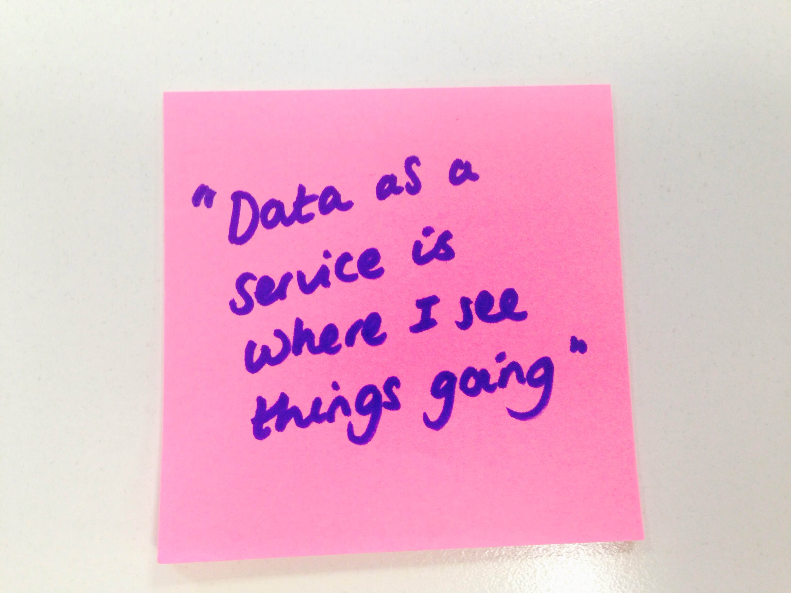

Open data publishing and discovery workshop (London chapter)

In August the ODI and Swirrl hosted our first open data publishing and discovery workshop in Manchester. We convened data publishers and developers from local government, academia and SMEs to showcase and test a range of open data tools. Together we shared experiences, openly discussed challenges, assessed user needs and identified the tools and services needed in a data publishing pipeline.
Partners from the ODI presented CSVLint, an open source tool that helps users check if their CSV files are readable and contain the columns and types of values required. Think of it as a precursor to the DataGraft platform that we've developed throughout the DaPaaS research project.
DataGraft enables powerful data transformations and provides reliable data hosting and access. Swirrl's Rick Moynihan demonstrated opportunities to use the platform, especially to meet user needs of building, modifying and sharing data transformations and reusing these to clean and transform spreadsheet data in an easily repeatable way.
The group then presented their challenges and showcased the projects and products they are working on, and we discussed some of the challenges around learning new skills (particularly to improve data literacy), culture change, creating businesses cases and capturing evidence and case studies.
These workshops last for 2-3 hours and attendees are able to test a range of complementary open data tools to improve their data publishing, from initial spreadsheet or database exports through to the creation of 5-star linked data. By sharing your products, ideas and challenges, together we can co-design further tools and develop our existing ones to ensure they meet user needs.
Our next workshop will be held at ODI HQ in London on Wednesday 9th September, 13:00 - 16:00. Register for your free ticket now and help us spread the word on Twitter.
Can’t make it to London, but want to get further involved? Why not:
- Sign up for DataGraft so that you can transform and host your data
- Read our documentation and watch our demonstration videos to understand how you might be able to use DataGraft
- Participate in our questionnaire and tell us how you publish and consume open data
- Contact us: [email protected] and follow our adventures.